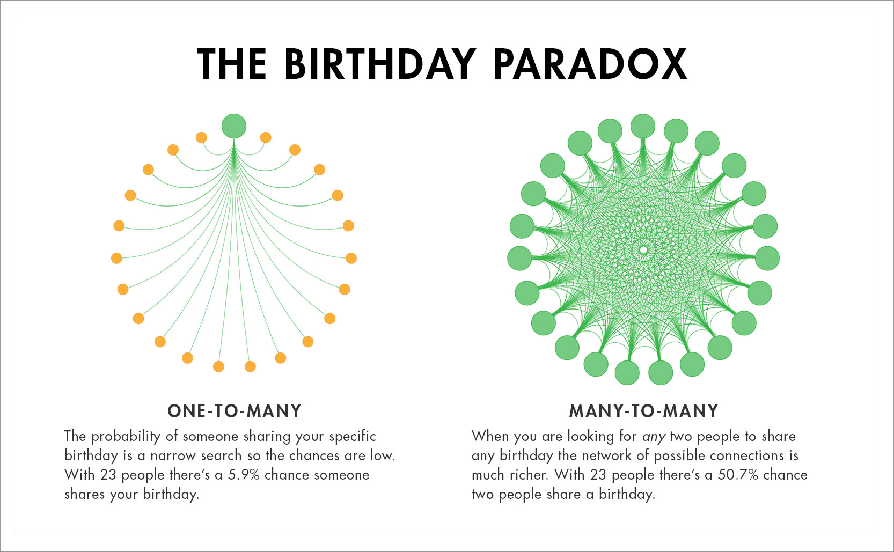
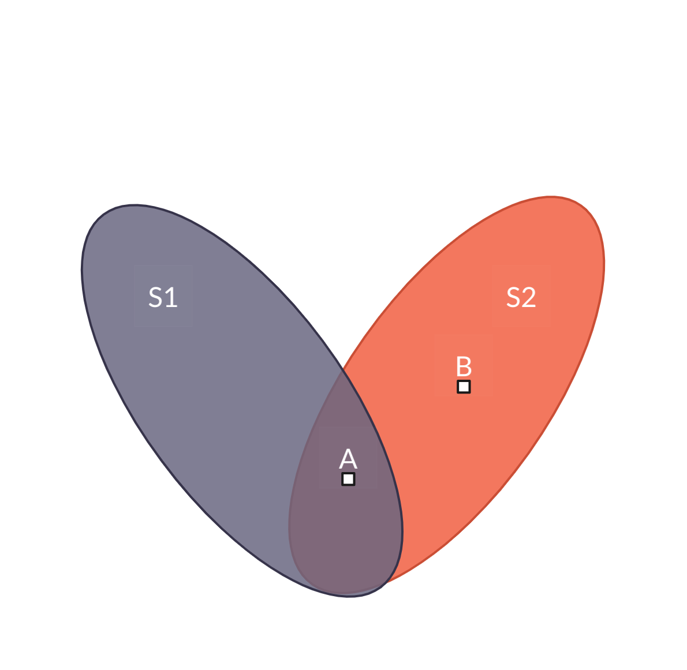
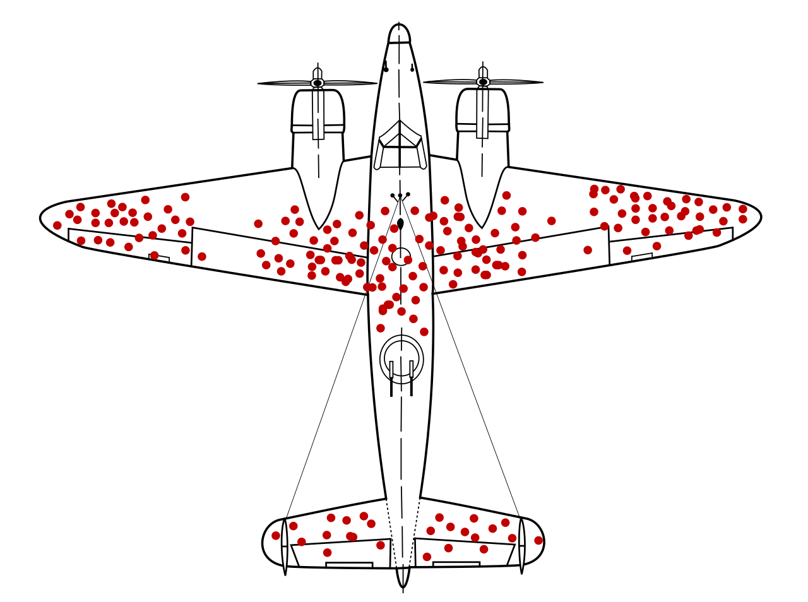
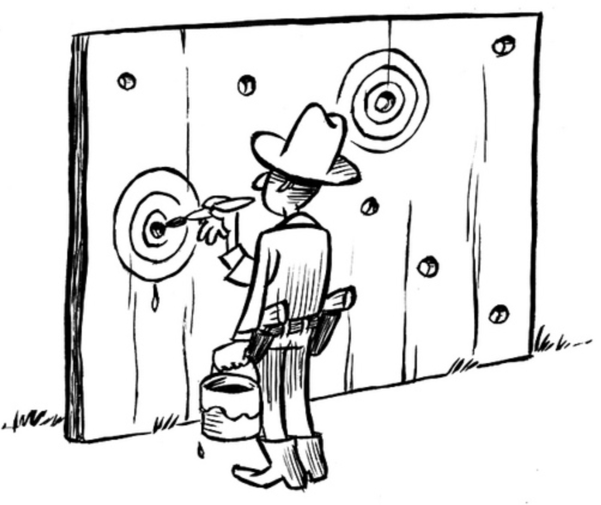

Data: What It Is, What It Can Tell Us, and What It Can't
8th Grade Data Science
Krista Herling & Nathan Layman
Section 1
Why Do We Need Data?
Opening Challenge INTERACTIVE
"Raise your hand if you listen to music while studying"
"Raise your hand if you think it helps"
"How do you know?"
How would you test this idea?
Would there be outliers?
What would the mechanism be?
We'll return to this question at the end of class.
The Problem with Gut Feelings
We are bad intuitive statisticians
The Birthday Problem: how many people do you need in a room for a 50% chance two share a birthday?
What's your guess?

Our brains look for stories, not patterns.
Here are a few ways humans suck at thinking.
Fallacy 1: The Association Fallacy
a form of hasty generalization — also known as the ecological fallacy
Note: gender exists on a spectrum — this data compares two groups as recorded in the research.
Average male grip strength > average female grip strength
But the distributions overlap enormously
Knowing someone's group tells you surprisingly little about that individual

If you think "boys tend to have higher grip strength than girls, therefore I have a higher grip strength than you" — someday you're going to get crushed.
Fallacy 2: Survivorship Bias
WWII planes were coming back with the wings and tail all shot up
What should we reinforce to help them be stronger?
Abraham Wald said: reinforce the engines planes hit there didn't come back

We only see the data that survived — the missing data is often the most important.
Modern version: "all these successful entrepreneurs dropped out of college!"
The fix: always ask what data you're NOT seeing
Fallacy 3: The Texas Sharpshooter
Shoot at a barn, then draw the target around the bullet holes
If you look at enough data you will always find a pattern — even in pure noise
This is how horoscopes, conspiracy theories, and bad science work
The fix: decide what you're looking for before you look

Fallacy 4: The Gambler's Fallacy INTERACTIVE
Heads: 0 | Tails: 0 | Total: 0
Weather connection: just because it hasn't rained in two weeks doesn't mean rain is "due."
The fix: ask whether events are truly independent before assuming streaks mean anything
The Monty Hall Problem INTERACTIVE
Pick a door — one hides a car 🚗, two hide goats 🐐
Stayed with original door
0 wins / 0 games (—)
Switched to other door
0 wins / 0 games (—)
The Capstone: Why Intuition Fails
Gambler's Fallacy and Monty Hall are mirror-image errors:
Gambler's Fallacy
Seeing dependence where there is none
the coin is independent but we treat it as connected
Monty Hall
Seeing independence where there is dependence
the host's reveal changes everything but we ignore it
Our intuition gets dependence exactly backwards — in predictable, systematic ways.
This is why we need data, math, and statistical thinking to check our gut.
What Data Does for Us
Data is how we learn how our world actually works.
Data Is Everywhere INTERACTIVE
Everything measurable is potential data: temperature, test scores, heart rate, rainfall, likes on a post
Name 5 things that you could measure today
Two Jobs of Data
🔍 Uncover hidden truths Things happening right now that we can't see with our eyes
📈 Forecast Predict what hasn't happened yet
Both depend on the same raw material: careful observation
Things Too Big, Too Small, Too Slow, or Too Fast to See
Too big — climate change, ocean currents, continental drift
Too small — bacteria, air pollutants, blood chemistry
Too slow — glacier retreat, species extinction, soil erosion
Too fast — lightning, nerve signals, a car crash
Data makes the invisible visible.
What Does a Dataset Actually Tell Us?
When you collect data you get a pile of numbers — how do you summarize it?
Where is the middle? central tendency
How spread out is it? variability
Is it going up or down? trend
Central Tendency: Finding the Middle
Mean Add all values, divide by count. Pulled by extreme values.
Median The middle value when sorted. Ignores extremes.
Mode The most common value. Useful for categories.
A billionaire walks into a room of average earners. Mean income spikes dramatically. Median and mode barely move.
They don't always agree — and that disagreement is informative. The choice of measure matters.
Remember the sharpshooter? Picking the measure that makes your point look best is drawing the target after the fact.
Central Tendency & Spread INTERACTIVE
📊 Spread (σ)LowHighσ = 5°F
🎯 Central TendencyColdHotμ = 65°F
📈 Trend (slope)↘ Down↗ Upslope = 0
Mean: —
Std dev: —
Min: —
Max: —
Correlation as a Clue
When two things move together it suggests a connection worth investigating
Example: ice cream sales and shark attacks both spike in summer
But correlation is just a clue — not an answer. This is another reason we need to be careful with data.
The Confounding Variable INTERACTIVE
The real culprit: hot weather drives both. This hidden third factor = a confounding variable
What's the confounding variable in each of these?
Countries with more TV sets have higher life expectancy
Kids with bigger feet are better spellers
More fire trucks at a fire → more damage
But do the firetrucks cause the damage?
What Makes a Good Forecast?
Doesn't need to know why — just what tends to happen next
"When pressure drops fast, it usually rains" — no fluid dynamics required
This is how a lot of modern machine learning works: find the pattern, skip the explanation
specific + honest about uncertainty + testable
Pattern vs. Mechanism
Pattern-based Powerful but blind — you know that it works, not why
Scientific method Tests hypotheses — slower but gives real understanding
"Is a forecast that works but has no explanation still science?"